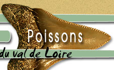

Plan du site
/ Poissons
Poissons
Requins
Requins remaniés
Megalodon
Carcharias : les requins taureaux
Carcharoides catticus
Megachasma
Cosmopolitodus
Isurus : le requin Mako
Alopias
Requin-pélerin
Notorynchus: le requin Griset
Hemipristis : le requin Cuivre
Chaenogaleus
Paragaleus
Galeocerdo : le requin Tigre
Carcharhinus
Negaprion
Requin Bécune
Rhizoprionodon
Requin-Marteau
Emissoles
Squaliformes
Heterodontus
Pachyscyllium
Premontreia
Requin nourrice
Rhincodon
Squatina
Raies
Raies-guitare
s
Rhinobatos
Poisson-scie
Raie Bouclée
Raie pastenague
Raie papillon
Raies à dents en segments
- Myliobatis
- Rhinoptera
- Aetobatis
Mobula
Manta
Chimères
Poissons osseux
Esturgeon
Perche du Nil
Labre
Trigonodon
Poisson-perroquet
Les sparidaes
Diplodus
Lagodon
Daurade
Pagre
Pagellus
Dentex
Sparidés non identifiés
Albula
Poisson chirurgien
Naso
Ctenochaetus
Balistes
Tétrodon
Diodon
Barracuda
Thazard
Acanthocybium
Marlin
Cyprinidés:
- Carassin
- Tanche
- Vandoise
Characiformes
Alestes
Channa
Poissons chats
Poissons non identifiés
Vertèbres de poissons
Coprolithes